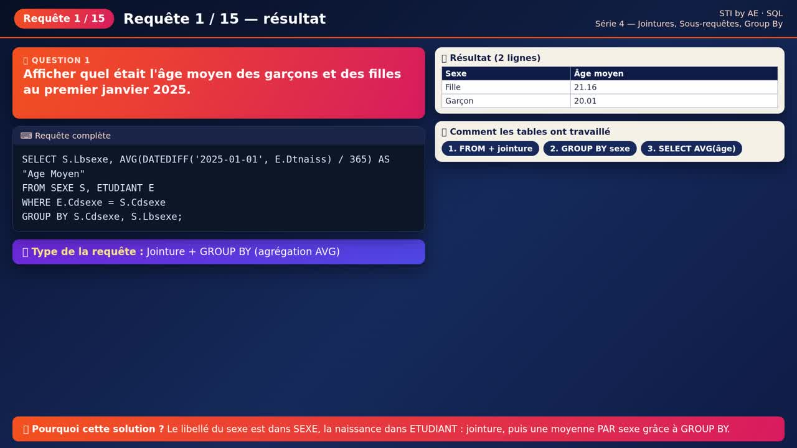
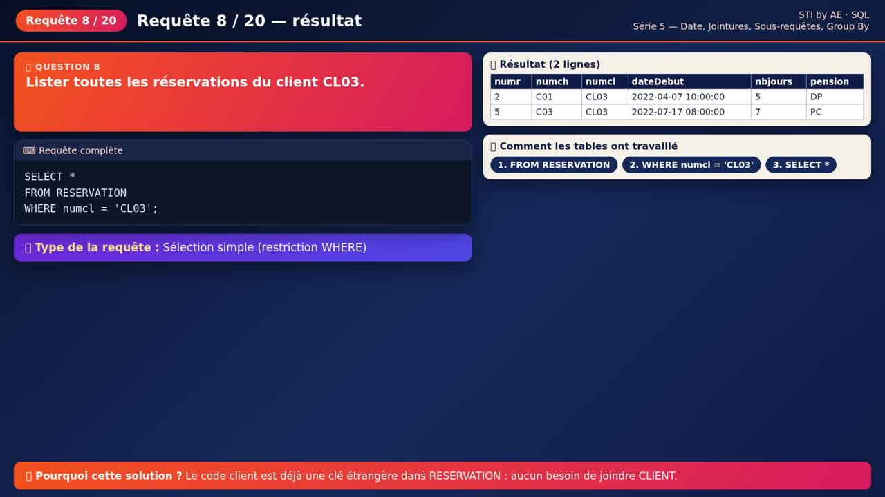
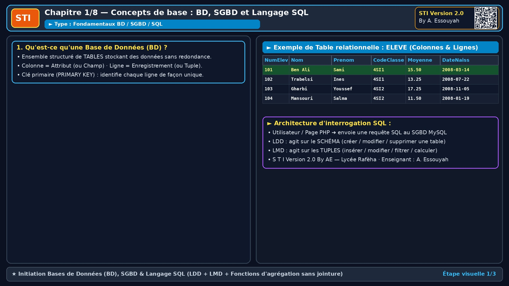
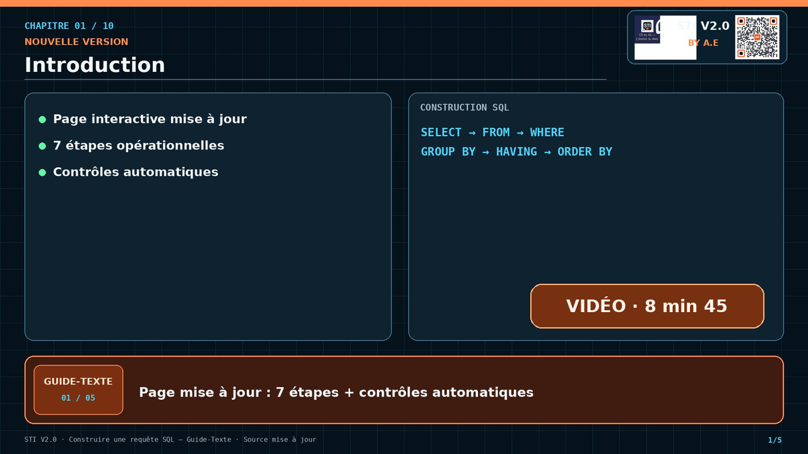

TP 1 · Premières requêtes
Créer et interroger une base de données.
Ouvrir l’énoncé ↗Comprendre les bases de données, créer des tables et écrire des requêtes, avec animations et exercices corrigés.
Lecture estimée : 30 min · hors vidéos
Votre progression est enregistrée dans votre profil.
À la fin, vous serez en mesure de :
Votre position de lecture est conservée dans votre profil.
Écoutez le cours et suivez les repères synchronisés avec la voix. Les animations utilisent les mêmes extraits.
Sélectionnez un repère pour écouter un extrait.
Deviens un
Héros SQL
une requête à la fois !
Cours complet et structuré : LDD, LMD, fonctions avancées et cas pratiques. Tout le nécessaire pour créer, remplir et interroger une base de données.

10 Chapitres commentés pas à pas avec Guide-Ligne (9 min 23 — Full HD 2 colonnes) : 1️⃣ Simulation entre Archives (BD / Database), Administration devant les archives (SGBD), Client & Requête (Query) en SQL + présentation de LDD, LMD, LCD · 2️⃣ Organisation en tables, champs, clé primaire, voyage en Avion ✈️ de la Table Mère vers la Table Fille & relations 1-1, 1-N, N-M · 3️⃣ LDD (construction de l'archive : CREATE, ALTER, DROP) · 4️⃣ LMD : faire entrer les données (INSERT), modifier (UPDATE) et supprimer (DELETE) · 5️⃣ LMD : demander à voir des données (SELECT) avec exemples concrets · 6️⃣ Les 5 fonctions d'agrégation (COUNT, AVG, MAX, MIN, SUM) · 7️⃣ [Spécial 4ème SI] Les jointures avec exemples concrets · 8️⃣ [Spécial 4ème SI] GROUP BY et HAVING · 9️⃣ [Spécial 4ème SI] Sous-requêtes et requêtes imbriquées · 🔟 Synthèse générale avec le Guide-Ligne.

10 chapitres commentés pas à pas avec Guide‑Texte (8 min 45 — Full HD) : page « Comment créer une requête SQL SELECT » · lecture de l’énoncé · cinq questions et sept étapes · SELECT · FROM et tables ponts · jointures dans WHERE · filtres et sous‑requêtes · GROUP BY et HAVING · ORDER BY et contrôles automatiques · auto‑jointures · assemblage complet.
Une base de données (BD) est un ensemble structuré et organisé de données stockées durablement sur un support informatique, géré par un SGBD pour éviter les redondances et garantir la cohérence.
Le SQL (Structured Query Language) est le langage standard permettant de communiquer avec une base de données relationnelle.
Imaginez une usine de stockage : la BD est la grande citerne qui contient les données ; le SGBD ressemble à la façade ou au guichet de l'usine, par lequel passe la demande. L'utilisateur adresse une requête SQL au SGBD, qui pilote l'accès à la citerne.
SELECT), le SGBD lit les données de la BD puis renvoie
le résultat à l'utilisateur. Pour une modification
(INSERT, UPDATE, DELETE), il
applique l'action dans la BD.
CREATE, ALTER, DROP).
SELECT, INSERT, UPDATE,
DELETE).
GRANT, REVOKE).
Dans une table, chaque ligne (enregistrement) doit pouvoir être retrouvée sans ambiguïté. C'est le rôle de la clé primaire. Pour relier deux tables entre elles, on utilise une clé étrangère.
Colonne (ou groupe de colonnes) qui identifie de façon unique chaque ligne d'une table.
NOT NULL implicite).NCIN_Cli) ou
composée (plusieurs colonnes :
(immat_Vehicule, NCIN_Cli, date_loc)).
Une table possède une seule clé primaire.
Colonne d'une table qui fait référence à la clé primaire d'une autre table (la table parente ou table référencée).
NULL si le lien est facultatif.| 🔑 NCIN_Cli | nom_Cli | ville |
|---|---|---|
| 12345678 | Ali Ben Salah | Tunis |
| 87654321 | Mouna Riahi | Sfax |
| 🔑 id_location | 🔗 NCIN_Cli | date_loc |
|---|---|---|
| 1 | 12345678 | 2024-03-10 |
| 2 | 12345678 | 2024-05-02 |
| 3 | 87654321 | 2024-06-15 |
-- La clé primaire identifie chaque client
CREATE TABLE Client (
NCIN_Cli VARCHAR(8) PRIMARY KEY,
nom_Cli VARCHAR(30) NOT NULL,
ville VARCHAR(20)
);
-- La clé étrangère NCIN_Cli relie chaque location à SON client
CREATE TABLE Location (
id_location INT PRIMARY KEY,
date_loc DATE,
NCIN_Cli VARCHAR(8),
FOREIGN KEY (NCIN_Cli) REFERENCES Client(NCIN_Cli)
);
Une contrainte d'intégrité est une règle que le
SGBD vérifie automatiquement à chaque insertion ou modification.
Si la règle n'est pas respectée, l'opération est refusée. Selon
l'endroit où on l'écrit dans CREATE TABLE, on parle de
contrainte de colonne ou de table.
NOT NULL, UNIQUE,
DEFAULT, CHECK,
PRIMARY KEY, REFERENCES.
CREATE TABLE Vehicule (
immat_Vehicule VARCHAR(10) PRIMARY KEY,
marque VARCHAR(20) NOT NULL,
modele VARCHAR(20) NOT NULL,
annee YEAR CHECK (annee >= 2000),
couleur VARCHAR(15) DEFAULT 'Blanc',
num_serie CHAR(12) UNIQUE
);CONSTRAINT nom, ce qui facilite sa suppression ou sa modification avec ALTER TABLE.PRIMARY KEY (a, b),
FOREIGN KEY ... REFERENCES,
UNIQUE (a, b), CHECK (...).
CREATE TABLE Location (
immat_Vehicule VARCHAR(10),
NCIN_Cli VARCHAR(8),
date_loc DATE,
date_retour DATE,
-- clé composée => contrainte de table
CONSTRAINT pk_location
PRIMARY KEY (immat_Vehicule, NCIN_Cli, date_loc),
CONSTRAINT fk_loc_vehicule
FOREIGN KEY (immat_Vehicule) REFERENCES Vehicule(immat_Vehicule),
CONSTRAINT fk_loc_client
FOREIGN KEY (NCIN_Cli) REFERENCES Client(NCIN_Cli),
-- CHECK sur 2 colonnes => contrainte de table
CONSTRAINT ck_dates CHECK (date_retour >= date_loc)
);| Contrainte | Rôle | Colonne | Table |
|---|---|---|---|
PRIMARY KEY |
Identifie chaque ligne (unique + non nulle) | ✔ si simple | ✔ obligatoire si composée |
FOREIGN KEY / REFERENCES |
Relie à la clé primaire d'une autre table | ✔ REFERENCES |
✔ FOREIGN KEY (...) |
NOT NULL |
Rend la valeur obligatoire | ✔ | ✘ |
UNIQUE |
Interdit les doublons (mais autorise NULL) | ✔ | ✔ sur plusieurs colonnes |
DEFAULT |
Valeur par défaut si rien n'est fourni | ✔ | ✘ |
CHECK |
Impose une condition sur les valeurs | ✔ une colonne | ✔ plusieurs colonnes |
CHECK comparant deux colonnes), elle doit
obligatoirement être écrite comme contrainte de table.
Une base de données relationnelle n'est pas une simple pile de tables isolées : les tables sont reliées entre elles grâce aux clés étrangères. Une relation (ou association) décrit comment les lignes d'une table correspondent aux lignes d'une autre. On distingue trois types de relations selon leurs cardinalités.
Une ligne de A correspond à au plus une ligne de B, et inversement. Un véhicule possède une seule carte grise, et une carte grise concerne un seul véhicule.
Traduction SQL : on place la clé étrangère dans l'une des deux tables et on lui ajouteUNIQUE (ou on
fusionne les deux tables en une seule).
Une ligne de A peut correspondre à plusieurs lignes de B, mais une ligne de B ne correspond qu'à une seule ligne de A. Un client effectue plusieurs locations ; une location appartient à un seul client.
Traduction SQL : la clé primaire du côté 1 (Client) devient clé étrangère du côté N (Location). C'est la relation la plus fréquente.Une ligne de A correspond à plusieurs lignes de B et réciproquement. Un client peut louer plusieurs véhicules ; un véhicule peut être loué par plusieurs clients.
Traduction SQL : impossible avec une simple clé étrangère ! On crée une table d'association (Location) dont la clé primaire est composée des deux clés étrangères.-- Relation N — N : la table d'association Location relie Client et Vehicule
CREATE TABLE Location (
NCIN_Cli VARCHAR(8),
immat_Vehicule VARCHAR(10),
date_loc DATE,
duree_loc INT(3),
-- clé primaire composée des deux clés étrangères (+ la date)
PRIMARY KEY (NCIN_Cli, immat_Vehicule, date_loc),
FOREIGN KEY (NCIN_Cli) REFERENCES Client(NCIN_Cli),
FOREIGN KEY (immat_Vehicule) REFERENCES Vehicule(immat_Vehicule)
);
-- Relation 1 — 1 : une carte grise par véhicule (clé étrangère UNIQUE)
CREATE TABLE Carte_grise (
num_carte VARCHAR(12) PRIMARY KEY,
date_emission DATE,
immat_Vehicule VARCHAR(10) UNIQUE,
FOREIGN KEY (immat_Vehicule) REFERENCES Vehicule(immat_Vehicule)
);UNIQUE ;
N — N → table d'association avec clé primaire composée. Les
schémas de la partie LDD (tables Client,
Vehicule et Location) appliquent
exactement ces règles.
Imaginez que l'on construise une grande citerne pour y ranger les données : CREATE DATABASE prépare l'espace, CREATE TABLE construit les compartiments, et une grue met en place une nouvelle structure. Le LDD sert à définir ou modifier l'organisation de la base.
CREATE DATABASE
Prépare le grand espace de stockage — comme délimiter le terrain et lancer la construction de la citerne.
CREATE TABLE
Crée une table, comme ajouter un compartiment structuré dans la
citerne (par exemple Client).
ALTER TABLE
Modifie la structure déjà construite — comme ajouter ou réorganiser une partie du plan.
DROP TABLE / DROP DATABASE
Supprime une table ou toute la base : l'équivalent d'une démolition. Vérifiez avant de lancer la commande.
Avant de créer des tables, le LDD permet d'initialiser l'espace de stockage global :
-- Créer une nouvelle base de données
CREATE DATABASE Gestion_Location;
-- Sélectionner et activer la base de données pour travailler dessus
USE Gestion_Location;
Norme de nommage : Utiliser des noms explicites
pour les tables et les champs, sans espaces ni accents, en séparant
les mots par un underscore _ (ex: nom_Cli,
date_acq). Éviter les mots réservés SQL.
Comparaison des types de données et exemples :
INT vs DECIMAL(p,s) :
INT : Nombres entiers (ex:
duree_loc INT(3) accepte 5,
12, 45).
DECIMAL(p,s) : Nombres décimaux précis (ex:
cout_loc DECIMAL(8,3) accepte
150.750 où 8 est le nombre total de chiffres et 3
les chiffres après la virgule).
VARCHAR(n) vs CHAR(n) :
VARCHAR(n) : Chaîne de caractères de longueur
variable (ex: nom_Cli VARCHAR(30) pour "Ali" ne
prend que l'espace nécessaire).
CHAR(n) : Chaîne de longueur fixe (ex:
code_postal CHAR(5) complète systématiquement
avec des espaces).
YEAR : Stocke une année sur 4 chiffres (ex:
2024).
La commande CREATE TABLE permet de structurer une
table. Pour lier des tables entre elles et garantir l'intégrité
référentielle, on utilise la clause
REFERENCES associée à une clé étrangère.
-- 1. Table parente : Client
CREATE TABLE Client (
NCIN_Cli VARCHAR(8) PRIMARY KEY,
nom_Cli VARCHAR(30) NOT NULL,
ville VARCHAR(20) DEFAULT 'Tunis'
);
-- 2. Table parente : Vehicule
CREATE TABLE Vehicule (
immat_Vehicule VARCHAR(10) PRIMARY KEY,
marque VARCHAR(20) NOT NULL,
modele VARCHAR(20) NOT NULL
);
-- 3. Table enfant : Location utilisant REFERENCES
CREATE TABLE Location (
id_location INT PRIMARY KEY,
date_loc TIMESTAMP DEFAULT CURRENT_TIMESTAMP,
NCIN_Cli VARCHAR(8),
immat_Vehicule VARCHAR(10),
-- Liaison vers la table Client (RESTRICT : bloque la suppression du client s'il a des locations)
CONSTRAINT fk_loc_client
FOREIGN KEY (NCIN_Cli)
REFERENCES Client(NCIN_Cli)
ON DELETE RESTRICT,
-- Liaison vers la table Vehicule (CASCADE : supprime les locations si le véhicule est supprimé)
CONSTRAINT fk_loc_vehicule
FOREIGN KEY (immat_Vehicule)
REFERENCES Vehicule(immat_Vehicule)
ON DELETE CASCADE
);Explication des comportements de suppression :
ON DELETE CASCADE : Le SGBD
supprime automatiquement les lignes enfants associées si la ligne
parente est effacée.
ON DELETE RESTRICT : Le SGBD
bloque strictement la suppression de la ligne parente tant qu'elle
est référencée.
Pour attribuer la date d'aujourd'hui et l'heure courante par défaut,
il faut utiliser le type TIMESTAMP avec
DEFAULT CURRENT_TIMESTAMP (cela ne fonctionne pas
directement avec le type DATE).
-- 1. Ajout de colonnes
ALTER TABLE Client ADD COLUMN Tel_Cli VARCHAR(10);
-- 2. Modification de colonnes
ALTER TABLE Client MODIFY COLUMN Tel_Cli INT(8);
ALTER TABLE Client MODIFY COLUMN Ville VARCHAR(20) DEFAULT 'Tunis';
-- 3. Suppression de colonnes
ALTER TABLE Client DROP COLUMN Adresse_Cli;
-- 4. Ajout de contrainte CHECK
ALTER TABLE Vehicule ADD CONSTRAINT CHECK (Annee_Acq BETWEEN 2000 AND 2022);
-- 5. Gestion des clés primaires
ALTER TABLE Location DROP PRIMARY KEY;
ALTER TABLE Location ADD PRIMARY KEY (immat_Vehicule, NCIN_Cli, date_loc);
-- 6. Activer / Désactiver des contraintes
ALTER TABLE Client DISABLE KEYS;
ALTER TABLE Client ENABLE KEYS;
-- 7. Renommer une table
ALTER TABLE Vehicule RENAME TO Voiture;Le LDD permet de nettoyer ou de supprimer complètement des structures existantes :
-- Supprimer définitivement une table et toutes ses données associées
DROP TABLE Client;
-- Supprimer une base de données entière du SGBD
DROP DATABASE Gestion_Location;L'insertion de données peut s'effectuer de plusieurs manières selon les besoins :
-- Cas 1 : Insertion complète en précisant explicitement toutes les colonnes
INSERT INTO Client (NCIN_Cli, nom_Cli, ville)
VALUES ('12345678', 'Ali Ben Salah', 'Tunis');
-- Cas 2 : Insertion implicite (sans lister les colonnes, dans l'ordre exact de création de la table)
INSERT INTO Client
VALUES ('87654321', 'Mouna Riahi', 'Sfax');
-- Cas 3 : Insertion partielle (en omettant les colonnes ayant une valeur par défaut ou auto-incrémentée)
INSERT INTO Client (NCIN_Cli, nom_Cli)
VALUES ('11223344', 'Karim Trabelsi'); -- La ville prendra la valeur par défaut 'Tunis'
-- Cas 4 : Insertion de lignes multiples en une seule requête (optimisée)
INSERT INTO Client (NCIN_Cli, nom_Cli, ville) VALUES
('55667788', 'Sami Mejri', 'Sousse'),
('99887766', 'Leila Dridi', 'Bizerte');
-- Cas 5 : Insertion par sous-requête (copier le résultat d'un SELECT dans une table)
INSERT INTO ClientArchive (NCIN_Cli, nom_Cli)
SELECT NCIN_Cli, nom_Cli
FROM Client
WHERE ville = 'Bizerte';-- Augmentation de salaires selon ancienneté
UPDATE Employe
SET Salaire = Salaire * 1.15
WHERE anciennete > 10;
-- Supprimer le premier caractère d'une colonne avec SUBSTR
UPDATE table
SET nom_colonne = SUBSTR(nom_colonne, 2)
WHERE condition;
-- Supprimer le dernier caractère d'une colonne
UPDATE table
SET nom_colonne = SUBSTR(nom_colonne, 1, CHAR_LENGTH(nom_colonne) - 1)
WHERE condition;a.x = b.x)
L'instruction UPDATE avec une jointure permet de mettre
à jour les données d'une table cible en la reliant à une seconde
table dans la clause WHERE par l'égalité de la colonne
commune a.x = b.x (clé primaire et clé étrangère de
même nom).
-- Forme générale STI : lister les 2 tables et relier par WHERE a.x = b.x
UPDATE TableA a, TableB b
SET a.colonne = b.nouvelle_valeur
WHERE a.x = b.x;
-- Exemple 1 (tables du cours Client c et Location l reliées par c.NCIN_Cli = l.NCIN_Cli) :
UPDATE Client c, Location l
SET c.ville = 'Tunis'
WHERE c.NCIN_Cli = l.NCIN_Cli
AND l.id_location = 1;
-- Exemple 2 (mise à jour de la ville des clients selon une table NouvelleAdresse par code_postal) :
UPDATE Client c, NouvelleAdresse na
SET c.ville = na.ville_officielle
WHERE c.code_postal = na.code_postal;Bonnes pratiques :
a.x = b.x
(ex. c.NCIN_Cli = l.NCIN_Cli) dans la clause
WHERE pour ne modifier que les lignes qui se
correspondent.
DELETE FROM Location
WHERE duree_loc = 0;
Clauses optionnelles : GROUP BY,
ORDER BY, HAVING.
Opérateurs : DISTINCT,
BETWEEN, LIKE, IN,
AND, OR, =, !=,
<, >.
SELECT Cod_cli, count(*) AS "Nombre d'achat"
FROM ventes
GROUP BY Cod_cli
HAVING count(*) >= 2;Question en langage courant : « Quels sont les noms des clients qui habitent à Tunis ? »
SELECT nom_Cli
FROM Client
WHERE ville = 'Tunis';SELECT nom_Cli
Quoi demander ?
La colonne à afficher : ici, le nom du client.
FROM Client
Où chercher ?
Dans la table qui contient les informations des clients.
WHERE ville = 'Tunis'
Quelle condition ?
Ne garder que les lignes des clients dont la ville est Tunis.
WHERE a.x = b.x)
Lorsqu'une information est répartie entre deux tables liées par une
clé primaire et une clé étrangère de même nom
(attribut commun x), on utilise une
jointure. En SQL STI, la jointure s'écrit
toujours avec la clause FROM TableA a, TableB b et la condition d'égalité WHERE a.x = b.x :
-- Forme générale d'une jointure entre 2 tables a et b sur l'attribut commun x :
SELECT a.col1, b.col2
FROM TableA a, TableB b
WHERE a.x = b.x;
-- Exemple 1 (2 tables : Client c et Location l reliées par c.NCIN_Cli = l.NCIN_Cli) :
SELECT c.nom_Cli, c.ville, l.id_location, l.date_loc
FROM Client c, Location l
WHERE c.NCIN_Cli = l.NCIN_Cli;
-- Exemple 2 (Jointure entre 2 tables + condition de filtrage supplémentaire avec AND) :
SELECT c.nom_Cli, l.id_location, l.date_loc
FROM Client c, Location l
WHERE c.NCIN_Cli = l.NCIN_Cli
AND c.ville = 'Tunis';
-- Exemple 3 (2 tables : Vehicule v et Location l reliées par v.immat_Vehicule = l.immat_Vehicule) :
SELECT v.immat_Vehicule, v.marque, v.modele, l.date_loc
FROM Vehicule v, Location l
WHERE v.immat_Vehicule = l.immat_Vehicule;
-- Exemple 4 (3 tables : Client c, Location l et Vehicule v) :
SELECT c.nom_Cli, v.marque, v.modele, l.date_loc
FROM Client c, Location l, Vehicule v
WHERE c.NCIN_Cli = l.NCIN_Cli
AND v.immat_Vehicule = l.immat_Vehicule;a.x = b.x) :
c.NCIN_Cli = l.NCIN_Cli) pour éviter
toute ambiguïté entre les deux tables.
a.x = b.x apparaissent dans le résultat : un client
qui n'a aucune location dans la table Location ne
figure pas dans le résultat de la jointure.
WHERE a.x = b.x, le
SGBD combine chaque ligne de a avec chaque ligne de
b (produit cartésien : N_a × N_b
lignes).
WHERE a.x = b.x)Choisissez un exemple puis lancez l'animation pour observer la comparaison ligne par ligne entre la Table A (a) et la Table B (b).
a.x = b.x.
SELECT count(*) FROM Articles WHERE num_frs = 777;SELECT avg(pa_art) FROM articles;-- Désignation de l'article le plus cher
SELECT des_art AS "Article plus cher"
FROM articles
Where pv_art = (SELECT max(pv_art) FROM articles);SELECT sum(pa_art) FROM articles;GROUP BY : regrouper les lignes pour calculer par catégorie
Utilisée seule, une fonction d'agrégation (COUNT,
SUM, AVG, MIN,
MAX) résume toute la table en une seule ligne.
La clause GROUP BY découpe la table en
groupes (paquets) partageant la même valeur sur une
ou plusieurs colonnes, puis applique la fonction d'agrégation
à chaque groupe séparément.
FROM / WHERE
Sélectionner les lignes
SQL lit la ou les tables (et applique WHERE a.x = b.x ou les filtres sur les lignes).
GROUP BY col
Former les paquets
Toutes les lignes ayant la même valeur de col sont rassemblées dans un même groupe.
SELECT col, COUNT(*)
Calculer 1 ligne par groupe
Les fonctions COUNT, SUM, AVG, MIN, MAX sont calculées pour chaque paquet.
-- 1) Nombre de clients dans chaque ville (1 table) :
SELECT ville, COUNT(*) AS nb_clients
FROM Client
GROUP BY ville;
-- 2) Nombre de locations, total des jours et durée moyenne par client (table Location) :
SELECT NCIN_Cli, COUNT(*) AS nb_loc, SUM(duree_loc) AS total_jours, AVG(duree_loc) AS duree_moy
FROM Location
GROUP BY NCIN_Cli;
-- 3) Jointure (WHERE a.x = b.x) + GROUP BY sur 2 tables (Client c et Location l) :
SELECT c.NCIN_Cli, c.nom_Cli, COUNT(l.id_location) AS nb_loc, SUM(l.duree_loc) AS total_jours
FROM Client c, Location l
WHERE c.NCIN_Cli = l.NCIN_Cli
GROUP BY c.NCIN_Cli, c.nom_Cli
ORDER BY total_jours DESC;GROUP BY :
SELECT en dehors
d'une fonction d'agrégation (COUNT,
SUM, AVG, MIN,
MAX) doit obligatoirement apparaître dans la clause GROUP BY.
SELECT c.NCIN_Cli, c.nom_Cli, COUNT(*)), écrivez
les deux colonnes dans le regroupement :
GROUP BY c.NCIN_Cli, c.nom_Cli.
GROUP BY rassemble les lignes en paquets et calcule les agrégatsChoisissez un exemple et cliquez sur ▶ Animer pas à pas pour voir chaque ligne rejoindre son groupe et mettre à jour COUNT, SUM et AVG en direct.
GROUP BY (calcul en direct)HAVING : filtrer les groupes après GROUP BY
En SQL, il est interdit d'écrire une fonction d'agrégation dans la clause WHERE
(écrire WHERE COUNT(*) >= 2 ou WHERE AVG(duree_loc) > 3 provoque une erreur),
car WHERE filtre les lignes individuelles avant que les groupes ne soient formés.
Pour filtrer les groupes sur le résultat de COUNT, SUM, AVG, MIN ou MAX,
on utilise la clause HAVING placée juste après GROUP BY.
| Critère | Clause WHERE |
Clause HAVING |
|---|---|---|
| Sur quoi agit-elle ? | Filtre les lignes individuelles (et fait la jointure a.x = b.x) |
Filtre les groupes créés par GROUP BY |
| Moment d'exécution | Avant GROUP BY |
Après GROUP BY |
Fonctions COUNT, SUM, AVG, MIN, MAX |
✘ Interdit | ✔ Autorisé (c'est son rôle !) |
-- Ordre obligatoire des clauses dans une requête SELECT complète :
SELECT c.NCIN_Cli, c.nom_Cli, COUNT(l.id_location) AS nb_loc, SUM(l.duree_loc) AS total_jours
FROM Client c, Location l
WHERE c.NCIN_Cli = l.NCIN_Cli -- 1. Jointure (a.x = b.x) et filtre sur les lignes
GROUP BY c.NCIN_Cli, c.nom_Cli -- 2. Regroupement par client
HAVING COUNT(l.id_location) >= 2 -- 3. Filtre sur les groupes (au moins 2 locations)
ORDER BY total_jours DESC; -- 4. Tri final du résultat
-- Exemple 2 : Villes comptant au moins 2 clients
SELECT ville, COUNT(*) AS nb_clients
FROM Client
GROUP BY ville
HAVING COUNT(*) >= 2;
-- Exemple 3 : Véhicules dont la durée moyenne de location est supérieure à 3 jours
SELECT immat_Vehicule, AVG(duree_loc) AS duree_moyenne
FROM Location
GROUP BY immat_Vehicule
HAVING AVG(duree_loc) > 3;WHERE trie les ingrédients avant de préparer les
paquets ; GROUP BY fabrique les paquets ;
HAVING pèse chaque paquet terminé et ne garde que ceux
qui respectent la condition (ex. HAVING COUNT(*) >= 2).
HAVING teste chaque groupe après GROUP BYObservez comment les groupes formés par GROUP BY sont inspectés un par un : seuls ceux qui vérifient la condition HAVING passent dans la table résultat finale.
HAVING sur chacun des groupes formés par GROUP BY.
GROUP BY (avant HAVING)HAVING : Groupes gardés vs éliminésSELECT id, CONCAT(prenom, ' ', nom) AS affichage_nom FROM utilisateur;SELECT id, login FROM utilisateur WHERE LENGTH(telephone) < 10;-- Exclure le premier caractère
SELECT SUBSTR(nom_colonne, 2) FROM table WHERE condition;SELECT LEFT('abcdefghij', 2); -- Résultat : 'ab'
SELECT RIGHT('abcdefghij', 3); -- Résultat : 'hij'DATETIME.
SELECT TIMESTAMP("2024-09-15", "10:35"); -- Résultat : 2024-09-15 10:35:00SELECT MONTH('2024-03-06'); -- Résultat : 3
SELECT YEAR('2024-03-01'); -- Résultat : 2024
SELECT NOW(); -- Retourne la date et l'heure système actuelles-- Ajouter ou retrancher un intervalle (MySQL STI) :
SELECT DATE_ADD('2024-08-25', INTERVAL 3 MONTH); -- Résultat : 2024-11-25
SELECT DATE_SUB(NOW(), INTERVAL 7 DAY); -- Il y a 7 jours
-- Écart en jours entre deux dates :
SELECT DATEDIFF('2024-08-25', '2024-08-15'); -- Résultat : 10Cette partie rassemble les deux vidéos de synthèse SQL qui reprennent, pas à pas, tout ce qu'il faut maîtriser pour le Bac : création de la base, contraintes, insertion, puis chaque requête tapée lettre par lettre avec les tables qui se transforment à l'écran (jointure → WHERE → GROUP BY → HAVING) et le type de la requête annoncé à la fin de chaque saisie.
📚 Méthode conseillée : regarder la vidéo, mettre en pause avant chaque résultat, refaire la requête sur papier, puis comparer avec le corrigé écrit (liens sous chaque vidéo).

Contenu : création de la BD ETUDIANT_BD (5 tables : SEXE, ENSEIGNANT, ETUDIANT, MATIERE, NOTES) · rappel sur les contraintes et le cas de l'UPDATE d'une clé référencée (par défaut RESTRICT) · insertions vérifiables · 15 requêtes corrigées : jointures (jusqu'à 5 tables), GROUP BY / HAVING, sous-requêtes imbriquées et corrélées, auto-jointure — chaque requête se termine par l'annonce de son type.
Vérifiez que les points clés de la vidéo ETUDIANT_BD sont acquis (lisible en mode sombre 🌙 et clair ☀️) :

Contenu : création de la BD Gesthotel (3 tables : CHAMBRE, CLIENT, RESERVATION) avec CHECK, AUTO_INCREMENT et DATETIME · rappel sur les contraintes et l'UPDATE par défaut RESTRICT · insertions vérifiables · 20 requêtes corrigées : fonctions de date (NOW, DATE, DATE_ADD, DATE_SUB), jointures, GROUP BY / HAVING, sous-requêtes scalaires et NOT IN — avec le type de chaque requête.
Vérifiez que les points clés de la vidéo Gesthotel sont acquis (lisible en mode sombre 🌙 et clair ☀️) :
Chaque fiche contient uniquement l'énoncé (schéma, données et questions — aucune correction), avec en-tête Nom / Classe / Date et barème sur 20. Cliquez, puis imprimez (ou enregistrez en PDF) depuis la fiche :
🖨️ Énoncé Série 4 (ETUDIANT_BD) — A4 🖨️ Énoncé Série 5 (Gesthotel) — A4
Téléchargez d'avance les pages de cette partie (cours, énoncés A4, corrigés écrits et miniatures) pour les ouvrir sans connexion — les vidéos restent en ligne (trop lourdes : 43 et 53 Mo).
Cochez les notions acquises par la classe au fil des séances : la progression se met à jour instantanément et reste enregistrée dans le navigateur.
0 % des notions acquises
0 % des notions acquises
🎓 Progression globale de la classe : 0 %
a.x = b.x).MIN, AVG…) ou d'une absence (NOT IN) — jamais d'agrégat directement dans le WHERE.COUNT, AVG…).DATE() pour ignorer l'heure, DATE_ADD / DATE_SUB pour reculer/avancer, DATEDIFF pour un écart.Suivez votre parcours et ouvrez les corrigés lorsque vous êtes prêt.
Le moteur local utilise SQLite sur un petit jeu d’essai, sans serveur. Sa syntaxe diffère de MySQL ; les fonctions et types spécifiques peuvent ne pas être reconnus.
eleves (id, nom, moyenne, classe).Retrouvez toutes les séries historiques et les ateliers complémentaires.
Créer et interroger une base de données.
Ouvrir l’énoncé ↗Énoncé A4, TP et correction écrite.
Énoncé A4, TP et correction écrite.
Retrouvez l’annexe d’origine, consultable en ligne ou téléchargeable.
Choisissez une ressource ; la lecture reprend là où vous l’avez laissée.

